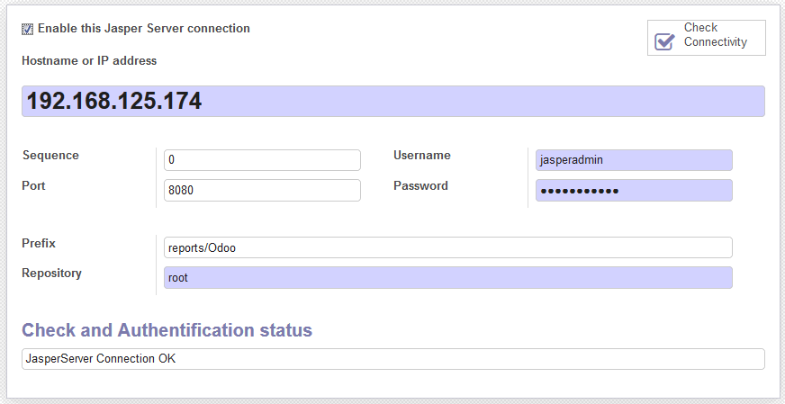
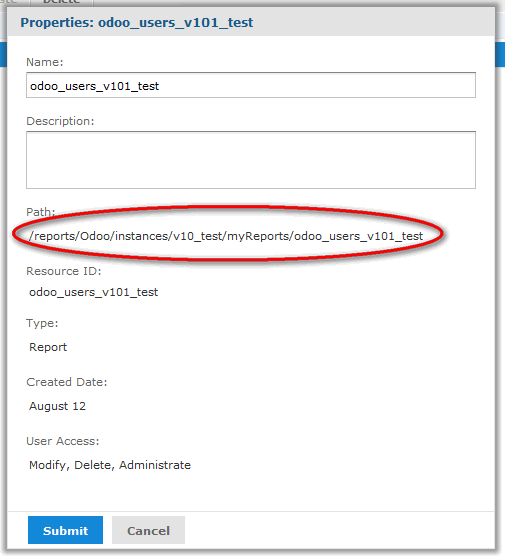
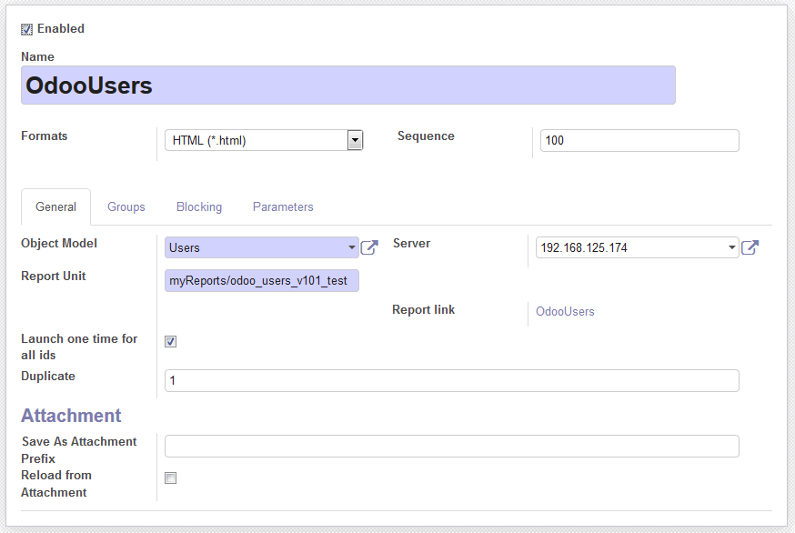
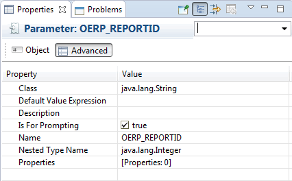
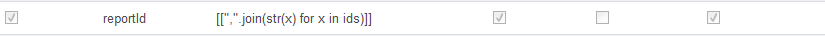
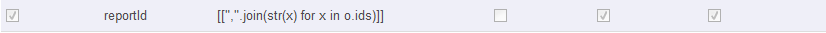
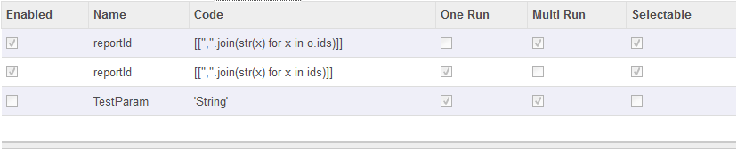
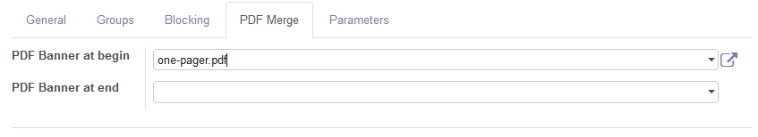
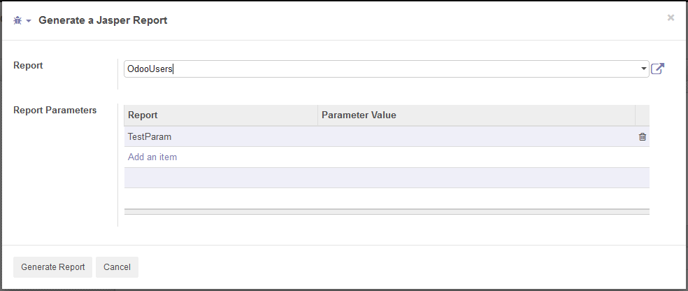

jasper_connector
A
module to run existing reports on a JasperSoft Server.
The
work is based on the original module of Mirounga, but its philosophy is
more to stay with the standard design architecture of JasperSoft.
Allthough
many changes have been made to align the code with the above rule,
still parts of the old code may be found in here to maybe activate them
at a later stage.
Remark: This is not an 'easy' module,
it requires extensive knowledge of the JasperSoft world, but once
aquainted with that environment you will most probably appreciate its
power.
In extension:
- Design your report with JasperSoft Studio
- Publish it to the JasperSoft Server Repository
- Use it in Odoo
There
are two ways of calling reports:
- As any other report
-You define a jasperDocument which refers to the existing
report in the
JasperSoft Server Repository
- Filter you records through standard Odoo search filtering
- Generate your report
- Through the generic report caller
-You define a jasperDocument which refers to the existing
report in the
JasperSoft Server Repository
- open the generic jasperreport wizard
- Provide any report parameters
- Generate your report
How to use?
Configure your JasperSoft Server's configuration
Location: Settings -> Technical -> Reports -> Japser Reports -> Server Configuration

- The
enable flag is in fact the same as the active flag and turns the record
invisible to searches (i.e. if no server is provided for a report then
the module will accept any available (read enabled) server).
- The Prefix is the value based on the position od the report on the Jaspersoft Server.
- The
repository is in most cases as shown here - root - unless you decided
to implement a more complex configuartion on the Jasper side.
The Prefix
The prefix is: that what will be prefixed to locate your report on the jasper server.
If you do not provide any value then the default location will be:
[repository]/openerp/bases/instances/[database_name]/[your_report_unit_name]
By changing the prefix, like above, it will become:
[repository]/reports/Odoo/instances/[database_name]/[your_report_unit_name]

As
soon as you provided all the details, the button in the right corner
will confirm a succesfull configuration by placing a return message in
the Check and Authentication status box.
Document Extensions
Location: Settings -> Technical -> Reports -> Japser Reports -> Document Extensions
Alltough one can try to edit an eventually add extensions, this is a bad idea and well for the following reasons:
- the
extensions are normally predefined and are injected through xml. Adding
your own should follow the same principle and adding them into the
jasper_document_extension.xml file.
- this version of the
japser_connector module uses the runReport webservice API which is
limited to the number of formats as already defined. So unless you
rewrite the webservice part you will not be able to enjoy any other
formats.
Documents
Location: Settings -> Technical -> Reports -> Japser Reports -> Documents
So
the generic design philosofy for this module is that you design, test
and refactor your reports through JasperStudio, publish them and then
call them through Odoo.
So once you have finished all that, then you are ready to create a Document entry.

The enabled flag is equal to the active flag and renders the report invisible for searches.
The formats fields allows you to select one of the predefined document extensions supported
General Tab
- The object model is the model where the option will appear in the Print menu
- The
Report Unit is equivalent to the name of your report and as stated
above is part of the path to the report on the JasperServer
- Launch
one time for all ids, will - if active- create one report based on all
ids at once. If not active it will generate a report for each id
seperately
- Duplicate indicates on how meny copies you want of the report
- Save
as attachment prefix is an eval compatible python expression which can
be provided to form the filename of your report, the extension will be
automatically appended. The format is similar to the one avialable in
other report definitions of Odoo (i.e. you have access to constants
(e.g. 'myreport') , the object (e.g. object.name) or time (e.g. time.strftime("%Y-%m-%d %H:%M:%S")
- Reload from attachment, will reload the previous report result if one exists with the exact same name on the target object
Groups Tab
In
case you select groups the report will only be available to members of
these groups. No groups means application wide availability.
Blocking Tab
In this tab you can define a condition in which you do not want the report generation .
Three choices:
- None - the report will be generated at all timesto happen.
- Simple
- in the Simple Check field you can enter an eval compatble python code
phrase in which you have access to the object as o (e.g. o.state in
('open','pending')) and the text you fill in the Return Message will be
showh when the check returns a false condition.
- Function - if
activated it is expected that the subject model contains a check_print
function. The function should return a tuple with two values e.g.
(False,'Genration not possible') or (True,'').
Parameters Tab
The parameters tab contains all report parameter as defined and required by your report design.
However
in your report design your parameters should receive the OERP_ prefix
and should be uppercased, e.g. ( reportID -> OERP_REPORTID).
There are some special ways of using the parameters defined here:
- A classic
report in Odoo, usually lets you filter your records and then by
selecting your records you can generate your report.
In order for this to work should setup report as follows:
Your report should be designed with the OERP_REPORTID parameter (jasper parameter properties excerpt):

On the JasperSoft Server side the query should look like:
SELECT * FROM res_users WHERE id in ($P!{OERP_REPORTID}) ORDER BY id
On the Odoo side the parameter exists in two variants:
In case of Launch one time for all ids set to True:

In case of Launch one time for all ids set to False:

- A jasper report based on a series of parameters, which can be used in the query and report design
The parameter tab view
The figure below depicts the Parameters Tab view:

- Enabled - decides whether the parameter will be taken into acoount or not
- Name
- the name of the parameter, do not forget that it will be uppercased
and prefixed with OERP_ when passen onto the JasperSoft Server
- Code - an eval compatible python code block in which you can return the correct value for your parameters. You have access to:
- o, being the currrent object
- c, being the company object
- t, being the time module
- u, being the user's object
- ids, the targeted ids
- One Run - these parameters will be eligible when the option Launch one time for all ids is set to True
- Multi Run - these parameters will be eligible when the option Launch one time for all ids is set to False
- Selectable - these parameters will be enabled to provide as parameters in the Generate Jasper Report' option
PDF Merge Tab
In case the format PDF is select the PDF Merge tab will become visible.
This tab will allow you to add a starting and ending banner to your report.
You
add the pdf files to the current report definition and you select them
as wanted in the PDF Banner to begin and PDF Banner to end field.

Generate a Jasper Report
Location: Settings -> Technical -> Reports -> Jasper Reports -> Generate a Jasper Report

- Select the report you want to generate
- Provide the parameters, which will automatically appear in the Report Parameters section (i.e. all selectable parameters)
- Start the report generation by pressing the 'Generate Report' button.